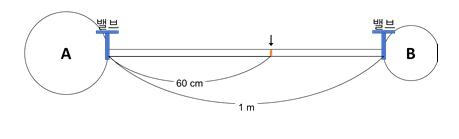

문제 1
기체 A와 기체 B는 화학반응을 통해 기체 C를 형성한다.
\[\text{A(g)} + \text{B(g)} \rightleftharpoons \text{C(g)}\]
아래 그림과 같이 1 기압의 공기로 채워져 있는 1 m 길이의 유리관 양쪽에서 1 기압의 기체 A와 1 기압의 기체 B를 밸브를 동시에 열어 유입시키고 기체 C가 형성되는 위치를 측정하였더니 왼쪽에서 60 cm이었다. (총 3점)

(1) 기체 A와 기체 B의 분자량의 비율이 어떻게 되는가? (각 기체의 용기 내에서의 이동 거리는 없고 가운데 유리관 내에서의 이동 거리만 가정한다.)
(2) 밸브를 열기 전 기체 A가 포함된 용기의 부피는 2 L, 기체 B가 포함된 용기의 부피는 1 L, 두 기체 사이를 연결하는 유리관의 부피는 1 L였다. 위 반응의 평형상수가 4라 할 때 평형을 이룬 후 유리관 내의 기압의 값을 구하여라. (단, \(\sqrt{2} = 1.4\)로 사용)